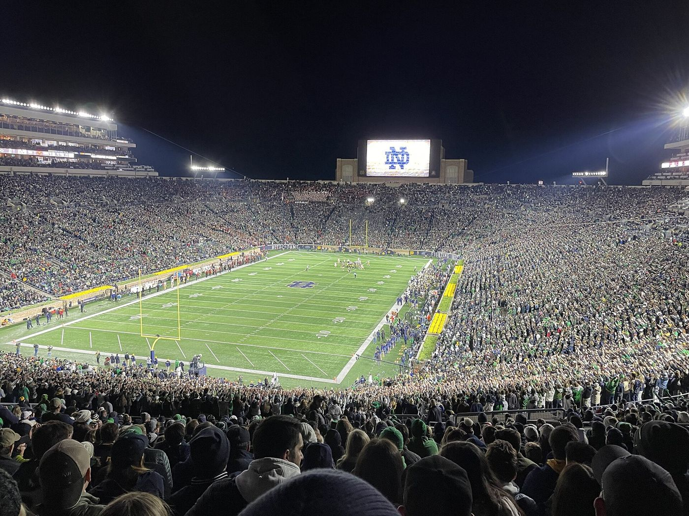

Anteprima · College football · Week 12
Notre Dame aspetta SMU con il College Football Playoff nel mirino
SMU @ Notre Dame · 22/11/2026, ore 01:30 italiane · Notre Dame Stadium
Nella notte tra sabato e domenica 22 novembre, alle 1:30 italiane, il Notre Dame Stadium ospita una sfida che a South Bend mancava dal 1989. Notre Dame arriva 9-1, con tre vittorie di fila e il College Football Playoff nel mirino; SMU è 7-3 e vuole la partita che può cambiarle la stagione.
I Fighting Irish hanno uno degli attacchi più completi del paese e un quarterback che sbaglia pochissimo: CJ Carr ha lanciato ventitré touchdown e appena due intercetti. Accanto a lui corre Nolan James Jr., e la difesa ha in Boubacar Traore il giocatore più pericoloso nei sack. L'unica sconfitta è arrivata a BYU, per quattro punti; da allora sono venute le vittorie su Navy, Miami e Boston College. Dopo aver mancato di poco il College Football Playoff la scorsa stagione, a Notre Dame non è concesso inciampare.
La SMU di Rhett Lashlee è una delle squadre di vertice della ACC e si regge sul braccio di Kevin Jennings, che lancia quasi trecento yard a partita, con Yamir Knight in grande forma. Il rovescio della medaglia è la difesa, che concede molto, e una certa fragilità: la settimana scorsa è arrivata una sconfitta pesante, 7-49 contro Wake Forest, e in stagione i Mustangs hanno già perso otto fumble.
Il mercato americano vede Notre Dame nettamente favorita. Per SMU, al primo viaggio a South Bend dal 1989, servirà una partita quasi perfetta: proteggere il pallone, tenere lontano dal campo l'attacco di Carr e sperare che Jennings trovi spazio contro una difesa che finora ha concesso pochissimo.
Leggi su PureStats con meteo e numeri